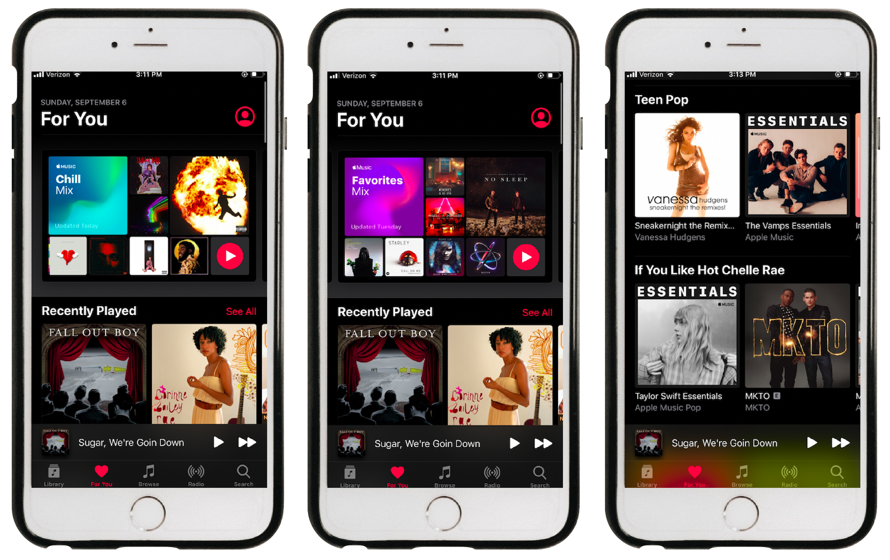
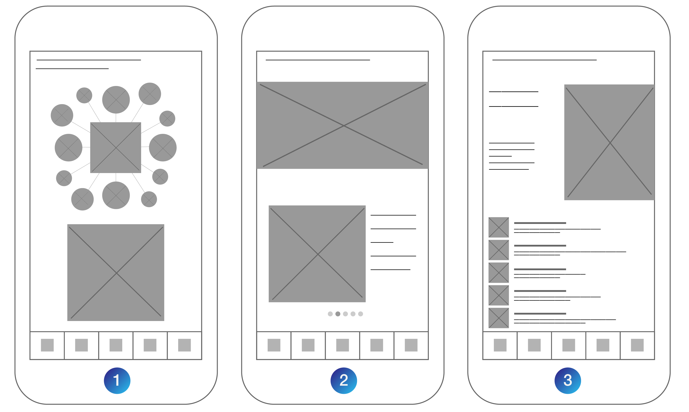

I am an Apple-everything kind of gal — phone, laptop, watch, pods, pad, softwares — you name it. This is an Apple household. Consistently, I am an Apple Music user, and I set out on a mission to see how I can develop the app for a better overall user experiene. Now you've found me here, on my quest for a successful App(le Music) Flow Redesign.
As an Apple Music user myself, I wanted to hear from others about their experience with the app. I went ahead and conducted a user research survey where I gathered 14 responses that provided me great insight into the app’s current user experience. Here is some of the data I collected:
Most people use the app every day. 71.4% of my responses use the app every day, where 28.6% of my responses use the app a few days a week.
A common favorite feature on the app was Apple’s provided/personalized playlists. People enjoy Apple’s “For You Friday’s” playlist, curated from the songs you “love”, “Your Favorite’s Mix” playlist, and more. Another common fan-favorite app feature was the app’s easy-to-use interface and navigation.
Finding new music seems to be difficult for the user. Individuals expressed difficulty in discovering new music, and voiced that Spotify has a better selection and personalization of music based off of the songs that you like.
The majority declared that Apple Music is easier to use than Spotify. Well, that’s a leg up! Even though Spotify seems to be better at providing new and tailored music, 64.3% of responses think Apple Music is more user friendly. As UX people, that’s always good to hear!
Something people want to see on the app is their Most Played Songs/of the Year. A popular feature amongst Spotify users, the Most Played Songs of the Year includes, well, a playlist of a user’s most played songs of the past year. Apple Music users want to see features like that, too.
And overall, users have a great experience with Apple Music. On a scale from 1-5 with 5 being the best, 64.3% of responses marked a 4 out of 5 experience, 21.4% marked 5 out of 5, and 14.3% marked 3 out of 5.
Here’s what this data tells us — Apple Music users love the app, but want a more personalized experience. Users want up-to-date music and curated playlists according to what they like. So, my design question for my App Flow Redesign Project has become the following: How can I provide a more personalized experience to Apple Music users?
In order to produce a better app, we need to have better ideas than the current version (shown in the screenshots below), right? That's where we started with our App(le Music) Redesign.
In order to make the Apple Music experience better, we will be including even more personalization within the existing "For You" tab. Here, the user can see their "Most Played".
Similar to Spotify, the "Most Played" section will feature the user's most played song of the year, week and month. Within each of those customized playlists, statistics such as Most Listened To Artist, Genre and Album will be readily available to view. This can be visualized in the wireframes above. Wireframe 1 has two large sections you could click on: the top cluster of photos represents your "Most Played of the Year" feature; while the large bottome square represents your "Most Played of the (current) Month" feature. After selecting the "Most Played of the Year" section, we move to Wireframe 2 where there would be a header as well as swipeable subsections such as "Most Played Artist/Genre/ Album" and more that you can click on. Clicking on those subsections takes you to Wireframe 3, where you get to discover a more in-depth look into your listening history and trends.
In the graphic above, you can see the visualization of the concept described in the previous paragraph. The design is simple and easy to use (something Apple Music users already enjoyed), and still visually enticing, just like the rest of Apple's work.
Thanks for reading! Stay tuned for more updates on this exciting quest for an App(le Music) Flow Redesign.